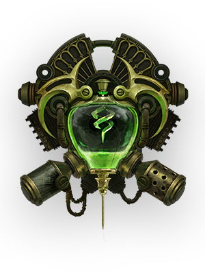

Este dolor... es un regalo.
~ UrgotUrgot, quien fue alguna vez un poderoso verdugo noxiano, había sido traicionado por el imperio que lo hizo matar a tantos en su nombre. Atado con cadenas de hierro, lo forzaron a aprender el verdadero significado de la fuerza en el Dragado, una mina de prisioneros en las profundidades de Zaun, de donde emergió como un desastre que propaga caos por toda la ciudad y proyecta una imponente sombra sobre el submundo criminal. Levantando a sus víctimas con las mismas cadenas que alguna vez lo esclavizaron, purgará su nuevo hogar de los indignos y lo convertirá en un crisol de dolor.
Rol
Luchador

Region
Zaun